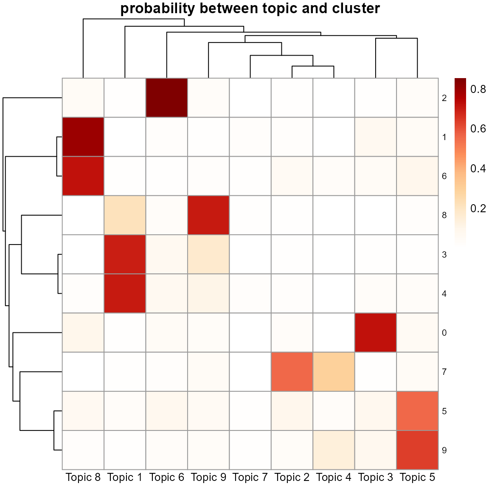
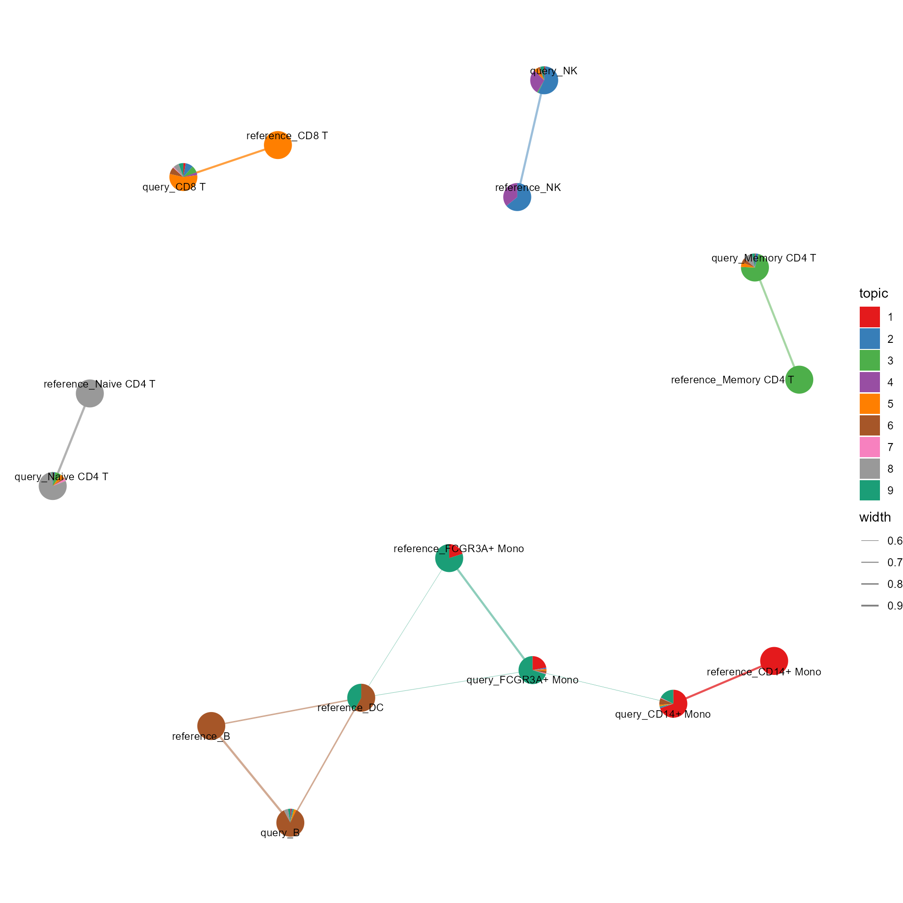
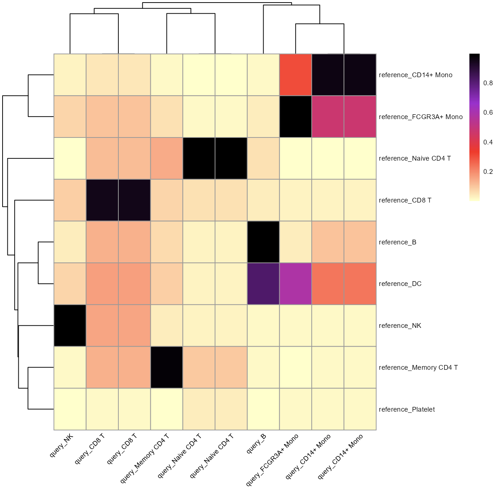
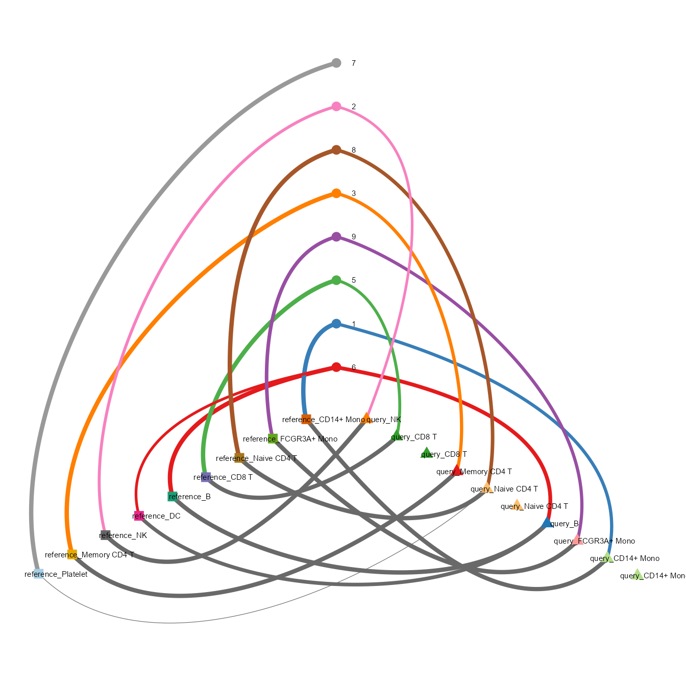

vignettes/transfer_topicmodel.Rmd
transfer_topicmodel.Rmd
library(CellFunTopic)
library(magrittr)CellFunTopic provides built-in reference topic models for users to take advantage of large landscape datasets such as the human cell landscape (HCL) and the mouse cell atlas (MCA).
?HCL_ldaOut
?MCA_ldaOutCellFunTopic also provides methods for users to make their own reference topic models.
Let us take pbmc3k.final as example to show how to make
a reference topic model and transfer. We take the original one as the
reference data, and re-cluster it as the query data.
Make a reference topic model out of pbmc3k.final with
the ground-truth cell type.
data('pbmc3k.final', package = "pbmc3k.SeuratData")
reference_SeuratObj <- readData(data = pbmc3k.final, type = 'Seurat', species = "Homo sapiens")
reference_SeuratObj <- DetectGeneIDtype(reference_SeuratObj)
SeuratObj.markers <- Seurat::FindAllMarkers(reference_SeuratObj, only.pos = TRUE, min.pct = 0.0001, logfc.threshold = 0.0001, return.thresh=0.9)
slot(object = reference_SeuratObj, name = 'misc')[["Allmarkers"]] <- SeuratObj.markers
reference_SeuratObj <- RunGSEA(reference_SeuratObj, by = 'GO')
k <- length(unique(Seurat::Idents(reference_SeuratObj)))
reference_SeuratObj <- runLDA(reference_SeuratObj, by = "GO", k = k, method = "VEM", SEED = 1234, plot = F)##
## Naive CD4 T Memory CD4 T CD14+ Mono B CD8 T FCGR3A+ Mono
## 697 483 480 344 271 162
## NK DC Platelet
## 155 32 14Re-analyze and re-cluster pbmc3k.final as the query
data, each cell owns a new cluster identity.
SeuratObj <- readData(data = pbmc3k.final, type = 'Seurat', species = "Homo sapiens")
SeuratObj <- CalMTpercent(SeuratObj, by = "use_internal_data")
SeuratObj <- QCfun(SeuratObj, plot = F)
SeuratObj <- RunSeurat(SeuratObj, nPCs = 10, resolution = 1, plot = FALSE)
SeuratObj <- RunGSEA(SeuratObj, by = 'GO')##
## 0 1 2 3 4 5 6 7 8 9
## 537 460 325 252 220 159 143 141 140 134Transfer topic model from reference data to query data.
ref_ldaOUt <- reference_SeuratObj@misc$ldaOut
SeuratObj <- transfer_LDA(query_SeuratObj = SeuratObj, ref_ldaOUt = ref_ldaOUt, by = "GO")
dist <- SeuratObj@misc$dist
gammaDF <- reshape2::melt(dist$topics) %>% magrittr::set_colnames(c("document", "topic", "gamma"))
plot_sankey(gammaDF, topn=1)
mm <- dist$topics
colnames(mm) <- paste0('Topic ', colnames(mm))
pheatmap::pheatmap(mm, cluster_rows = T, cluster_cols = T, angle_col = "0", main = "probability between topic and cluster",
color = colorRampPalette(c('white', RColorBrewer::brewer.pal(n=9,name="OrRd")))(100),
fontsize_row = 8)
CellFunTopic provides a few methods to visualize correlation or comparison between reference data and query data. For better comparison, we identify the cell types of query data based on ground-truth identity of each cell.
mm <- table(SeuratObj$seurat_annotations, SeuratObj$seurat_clusters)
nn <- setNames(rownames(mm)[apply(mm, 2, which.max)], colnames(mm))
rownames(dist$topics) <- nn[rownames(dist$topics)]
sankey_comparison(ldaOut=ref_ldaOUt, dist=dist, a_prefix="reference_", b_prefix="query_", height=800)
cosine_network_cluster2(ldaOut=ref_ldaOUt, dist=dist, a_prefix="reference_", b_prefix="query_",
layout="fr", cos_sim_thresh=0.5, radius=0.1, text_size = 3)
cosine_heatmap2(ldaOut=ref_ldaOUt, dist=dist, a_prefix="reference_", b_prefix="query_", method="cosine")
cosine_hive(ldaOut=ref_ldaOUt, dist=dist, a_prefix="reference_", b_prefix="query_")